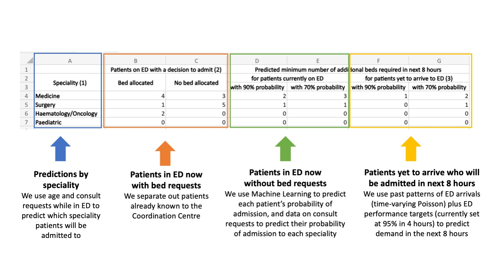

Putting it all together
This notebook shows an example of how to convert data from the saved datasets, plus models trained earlier, into the output show below in columns D-G. [WORK IN PROGRESS]
from IPython.display import Image
Image(filename='img/UCLH application with annotation.jpg')

In order to recreate the output this notebook, prior steps are
- train a model predicting admission to ED (this is done in notebook 4a_Predict_probability_of_admission_from_ED.md)
- train a model predicting admisson to each specialty if admitted (this is done in notebook 4c_Predict_probability_of_admission_to_specialty.md)
- train a model predicting demand from patients yet-to-arrive (this is done in notebook 4d_Predict_demand_from_patients_yet_to_arrive.md)
Set up notebook environment
# Reload functions every time
%load_ext autoreload
%autoreload 2
The autoreload extension is already loaded. To reload it, use:
%reload_ext autoreload
from patientflow.load import set_project_root
project_root = set_project_root()
Inferred project root: /Users/zellaking/Repos/patientflow
Load parameters and set file paths
import pandas as pd
from patientflow.load import load_data
from patientflow.load import set_file_paths
# set file paths
data_folder_name = 'data-public'
data_file_path = project_root / data_folder_name
data_file_path, media_file_path, model_file_path, config_path = set_file_paths(project_root,
data_folder_name=data_folder_name)
# load data
ed_visits = load_data(data_file_path,
file_name='ed_visits.csv',
index_column = 'snapshot_id',
sort_columns = ["visit_number", "snapshot_date", "prediction_time"],
eval_columns = ["prediction_time", "consultation_sequence", "final_sequence"])
# load params
from patientflow.load import load_config_file
params = load_config_file(config_path)
start_training_set, start_validation_set, start_test_set, end_test_set = params["start_training_set"], params["start_validation_set"], params["start_test_set"], params["end_test_set"]
prediction_times = params["prediction_times"]
x1, y1, x2, y2 = params["x1"], params["y1"], params["x2"], params["y2"]
prediction_window = params["prediction_window"]
epsilon = float(params["epsilon"])
yta_time_interval = params["yta_time_interval"]
print(f'\nTraining set starts {start_training_set} and ends on {start_validation_set - pd.Timedelta(days=1)} inclusive')
print(f'Validation set starts on {start_validation_set} and ends on {start_test_set - pd.Timedelta(days=1)} inclusive' )
print(f'Test set starts on {start_test_set} and ends on {end_test_set- pd.Timedelta(days=1)} inclusive' )
print(f'\nThe coordinates used to derive the aspirational curve are ({int(x1)},{y1}) and ({int(x2)},{y2})')
print(f'The prediction window over which prediction will be made is {prediction_window/60} hours')
print(f'In order to calculate yet-to-arrive rates of arrival, the prediction window will be divied into intervals of {yta_time_interval} minutes')
Configuration will be loaded from: /Users/zellaking/Repos/patientflow/config.yaml
Data files will be loaded from: /Users/zellaking/Repos/patientflow/data-public
Trained models will be saved to: /Users/zellaking/Repos/patientflow/trained-models/public
Images will be saved to: /Users/zellaking/Repos/patientflow/trained-models/public/media
Training set starts 2031-03-01 and ends on 2031-08-31 inclusive
Validation set starts on 2031-09-01 and ends on 2031-09-30 inclusive
Test set starts on 2031-10-01 and ends on 2031-12-31 inclusive
The coordinates used to derive the aspirational curve are (4,0.76) and (12,0.99)
The prediction window over which prediction will be made is 8.0 hours
In order to calculate yet-to-arrive rates of arrival, the prediction window will be divied into intervals of 15 minutes
Pick a random row to simulate the real-time environment
from datetime import datetime, time
# Set seed
import numpy as np
np.random.seed(2404)
# Randomly pick a prediction moment to do inference on
random_row = ed_visits[ed_visits.training_validation_test == 'test'].sample(n=1)
prediction_time = random_row.prediction_time.values[0]
prediction_date = random_row.snapshot_date.values[0]
prediction_moment = datetime.combine(pd.to_datetime(prediction_date).date(), datetime.min.time()).replace(hour=prediction_time[0], minute=prediction_time[1])
prediction_snapshots = ed_visits[(ed_visits.prediction_time == prediction_time) & \
(ed_visits.snapshot_date == prediction_date)]
prediction_snapshots
| snapshot_date | prediction_time | visit_number | elapsed_los | sex | age_group | arrival_method | current_location_type | total_locations_visited | num_obs | ... | latest_lab_results_pco2 | latest_lab_results_ph | latest_lab_results_wcc | latest_lab_results_alb | latest_lab_results_htrt | training_validation_test | final_sequence | is_admitted | random_number | specialty | |
|---|---|---|---|---|---|---|---|---|---|---|---|---|---|---|---|---|---|---|---|---|---|
| snapshot_id | |||||||||||||||||||||
| 77829 | 12/23/2031 | (15, 30) | 153328 | 80793 | M | 75-102 | Ambulance | sdec | 7 | 112 | ... | 5.78 | 7.392 | 10.31 | 46.0 | NaN | test | ['acute'] | True | 63866 | medical |
| 77935 | 12/23/2031 | (15, 30) | 153425 | 33893 | F | 25-34 | Public Trans | sdec | 5 | 34 | ... | 4.84 | 7.394 | 9.71 | 49.0 | NaN | test | ['obs_gyn'] | False | 25439 | NaN |
| 77947 | 12/23/2031 | (15, 30) | 153435 | 9900 | F | 35-44 | NaN | sdec | 4 | 16 | ... | 6.34 | 7.353 | 9.25 | NaN | NaN | test | ['obs_gyn'] | False | 36175 | NaN |
| 77951 | 12/23/2031 | (15, 30) | 153437 | 28398 | F | 25-34 | Walk-in | majors | 4 | 79 | ... | 5.39 | 7.402 | 15.27 | 46.0 | NaN | test | ['obs_gyn'] | False | 65532 | NaN |
| 77960 | 12/23/2031 | (15, 30) | 153445 | 26421 | F | 75-102 | Ambulance | majors | 4 | 56 | ... | 5.31 | 7.410 | 3.96 | 37.0 | NaN | test | ['acute'] | True | 57328 | medical |
| ... | ... | ... | ... | ... | ... | ... | ... | ... | ... | ... | ... | ... | ... | ... | ... | ... | ... | ... | ... | ... | ... |
| 78129 | 12/23/2031 | (15, 30) | 153611 | 3973 | M | 35-44 | Walk-in | waiting | 2 | 7 | ... | NaN | NaN | NaN | NaN | NaN | test | [] | False | 57945 | NaN |
| 78130 | 12/23/2031 | (15, 30) | 153612 | 3839 | F | 25-34 | Walk-in | waiting | 2 | 16 | ... | NaN | NaN | NaN | NaN | NaN | test | [] | False | 78438 | NaN |
| 78131 | 12/23/2031 | (15, 30) | 153613 | 3733 | M | 35-44 | Walk-in | waiting | 2 | 5 | ... | NaN | NaN | NaN | NaN | NaN | test | [] | False | 75014 | NaN |
| 78132 | 12/23/2031 | (15, 30) | 153614 | 3644 | F | 55-64 | Walk-in | waiting | 1 | 16 | ... | NaN | NaN | NaN | NaN | NaN | test | ['surgical'] | False | 4122 | NaN |
| 78133 | 12/23/2031 | (15, 30) | 153615 | 3629 | F | 0-17 | Walk-in | waiting | 1 | 0 | ... | NaN | NaN | NaN | NaN | NaN | test | [] | False | 74758 | NaN |
92 rows × 69 columns
Generate predictions
The predictions for input into the spreadsheet output are generated by the create_predictions() function
from patientflow.predict.emergency_demand import create_predictions
We will load previously created models from disk and save to a dictionary of models
yta_model_name = f"ed_yet_to_arrive_by_spec_{int(prediction_window/60)}_hours"
model_names = {
"admissions": "admissions",
"specialty": "ed_specialty",
"yet_to_arrive": yta_model_name
}
models = dict.fromkeys(model_names)
model_file_path
PosixPath('/Users/zellaking/Repos/patientflow/trained-models/public')
from patientflow.load import load_saved_model, get_model_key
# as the admissions models are a dictionary of models, we need to load each one
models["admissions"] = {}
for prediction_time in ed_visits.prediction_time.unique():
model_name_for_prediction_time = get_model_key("admissions", prediction_time)
models["admissions"][model_name_for_prediction_time] = load_saved_model(model_file_path, "admissions", prediction_time)
models["ed_specialty"] = load_saved_model(model_file_path, "specialty")
models[model_names["yet_to_arrive"]] = load_saved_model(model_file_path, yta_model_name)
type(models["admissions"][model_name_for_prediction_time])
patientflow.train.emergency_demand.ModelResults
In the cell below we create the predictions for this randomly chosen moment in time:
from patientflow.predict.emergency_demand import create_predictions
create_predictions(
models = models,
model_names=model_names,
prediction_time = prediction_time,
prediction_snapshots = prediction_snapshots,
specialties = ['surgical', 'haem/onc', 'medical', 'paediatric'],
prediction_window_hrs = prediction_window/60,
cdf_cut_points = [0.9, 0.7],
x1 = x1,
y1 = y1,
x2 = x2,
y2 = y2)
{'surgical': {'in_ed': [2, 3], 'yet_to_arrive': [0, 0]},
'haem/onc': {'in_ed': [0, 1], 'yet_to_arrive': [0, 0]},
'medical': {'in_ed': [6, 8], 'yet_to_arrive': [0, 1]},
'paediatric': {'in_ed': [0, 0], 'yet_to_arrive': [0, 0]}}